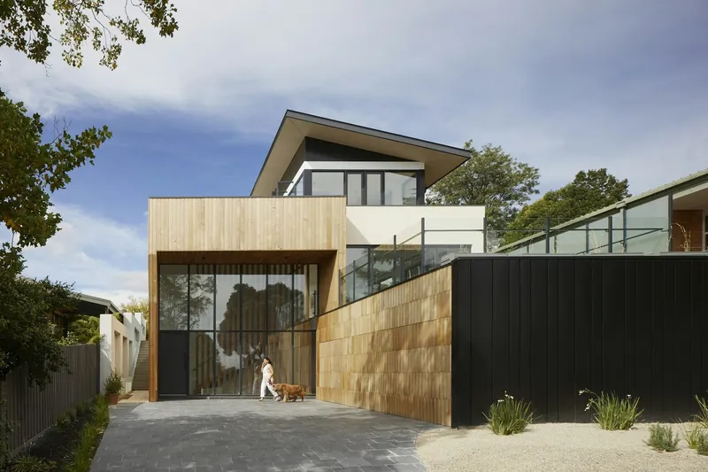

01 / CENTRAL CHENNAI
01 / CENTRAL CHENNAI
Nungambakkam & Alwarpet
Established streets, everyday conveniences and a mix of homes close to the heart of the city.
FIND A HOME / YOUR NEXT CHAPTER
Narrow the collection by area and home style, then compare the residences that fit your search.
Loading homes…
GET TO KNOW THE CITY
01 / CENTRAL CHENNAI
Established streets, everyday conveniences and a mix of homes close to the heart of the city.
 02 / SOUTH CHENNAI
02 / SOUTH CHENNAI
Green avenues and a relaxed coastal influence shape these much-loved residential neighbourhoods.
Room to breathe, contemporary residences and easy access to the city's expanding southern corridor.

A CLEARER SHORTLIST
Choose an area and home style above to shape your shortlist. Compare the practical details, save the homes that catch your eye and contact us when you are ready to arrange a viewing.
Talk through your search